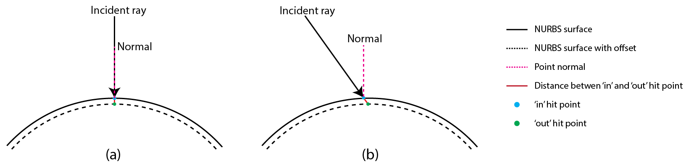
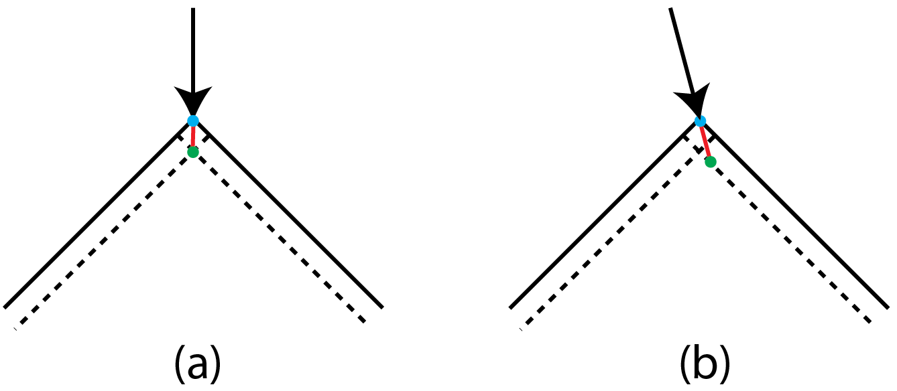
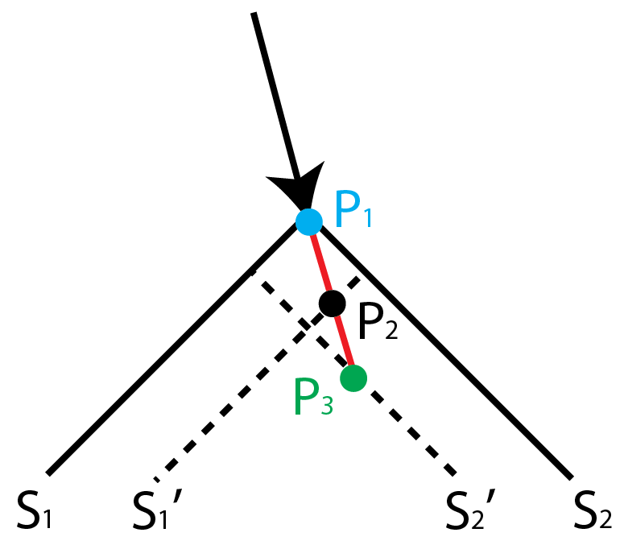

Plate Mode NURBS Raytracing
Name: Bojian Wu
Email: ustcbjwu[AT]gmail.com
IRC: boj
Background
I am currently a first year PhD student majoring in computer graphics in Chinese Academy of Science, Graduate School, China. My research topics include geometry processing and modeling, it is very interesting and attractive to me. Modeling techniques, which are basis for lots of applications, cover a large range of industrial products, including CAD, 3D printing, computer animations, rendering and so on. Recently, I am working on a project about geometry modeling, it contains some basic operations in solid modeling system, so I want to learn more and improve myself.
Brief Summary
BRL-CAD currently has a routine to compute plate mode BoT raytracing, and generally, it works well. But the BoT is the most simplest case, usually, it can not be used to describe the models with high precision requirement. To this end, the boundary representation (B-rep) modeling is proposed, but it does not support the plate mode, so actually, the B-rep model can not form a solid volume but just a thin surface.
In this project, I would like to implement the plate mode for NURBS raytracing, cause it is very important for ray tracing and other related applications. Since it is not an easy task, lots of tests and verifications are needed, and it also involves designing basic data structure, importing/exporting data, intersection tests and so on, so I need to think it more and currently give a short summary about what I plan to do and some simple solutions here. If time is enough, I will consider how to visualize the plate mode and design some interactive commands used in ‘mged’.
Project Details
Introduction
In Constructive Solid Geometry (CSG) system, the modeling process is usually represented as boolean operations of some basic primitives such as cubes, spheres, etc. This method is often used in solid modeling system and its operations always construct the basic solid modeling pipeline.
Besides, the boundary representation (B-rep) is also a method for representing models by using a collection a connected surface elements. So for the purpose of solid modeling, it is commonly impractical to represent these thin solids exactly as bounded volume, thus an available approach is to assign an implicit thickness to each face and then we can consider the thickness as a face property. Simply speaking, when shooting a ray towards the B-rep model, we can get ‘in’ and ‘out’ hit point from a face while the ‘out’ hit point is a small offset from the ‘in’ one with given thickness value along the ray direction.
Currently, BRL-CAD implements this modeling technique in BoT primitive and refer it as ‘plate mode’. This project is aiming at implementing ‘plate mode’ for NURBS surfaces.
Current Work
Currently, BRL-CAD has implemented plate mode raytracing in BoT primitive.
Short Plans
Following the implementation of plate mode of BoT, I have divided my plans into several parts, and will illustrate each part individually.
- Basic data structure
The basic problem is about how to integrate these additional attributes, including face mode and thickness value, into current ‘rt_brep_internal’ and ‘brep_specific’ data structure. At present, the ‘brep’ is represented as openNURBS ‘ON_Brep’, which is an internal data structure defined in openNURBS, so it is not so elegant to add these attributes into ‘ON_Brep’ directly. But as mentioned before, the thickness value is an implicit property of each face, so maybe it is more reasonable to add it into ‘ON_Brep’. Currently, I just add the face mode and thickness value in ‘rt_brep_internal’ and ‘brep_specific’, because by doing this, it is more easier for me to follow the code. Next, I need to find a balance between these two representations.
- Database import and export
After defining the basic data structure, we need to consider how to import/export the database. The related functions are ‘rt_brep_import5()’ and ‘rt_brep_export5()’. Similar to BoT, when we create NURBS with given thickness, we can provide the parameters in command line, then we have several options on how to assign the thickness value to each face. The basic method is to give the same thickness value to each face. Other options may consider the curvature, normal or some specific surface properties and design an adaptive method to finish the assignment, it is a balance between global thickness and per-face thickness.
Besides, ‘rt_brep_import5()’ and ‘rt_brep_export5()’ provide the transformation interface between internal and external data structure, I also need to pay attention to the transformation format.
- Ray tracing preparation
When obtaining internal data structure ‘rt_db_internal’, we need to copy data to ‘brep_specific’ in ‘rt_brep_prep()’, it is used for data preparation when doing ray tracing.
Besides, instead of building BVH (Bounding Volume Hierarchy) to generate surface tree, it may be more efficient to find the bounding boxes of all the faces in the face list of ‘brep’, when doing ray tracing, we only need to find the final intersected bounding box and compute the intersection hit point.
- Ray tracing
1) Ray intersection with surface

Figure 1: Ray intersection with surface.(a) Incident ray at normal direction precisely. (b) Incident ray deviating normal direction in a certain angle.
As implemented in BoT, similarly, we have two methods to compute the ‘in’ and ‘out’ hit point. The first one is to consider the real hit point as the ‘in’ point, then offset it with thickness value along the ray direction and generate the ‘out’ point. The second one is to treat the real hit point as a middle point, then offset it both along the ray direction and its opposite direction with half of thickness value, so that we can generate two points and make them as ‘in’ and ‘out’ hit point, respectively.
Taking the first method as an example, as shown in Figure 1, we denote dray as normalized direction of incident ray, dn as normalized normal direction of ‘in’ hit point, pin as ‘in’ hit point and pout as ‘out’ hit point. Then in Figure 1(a), pout=pin+dray*thickness. In Figure 1(b),pout≈pin+dray*thickness<dray, -dn> where, <dray,-dn> represents the inner product of dray and -dn.
2) Ray intersection with corner.

Figure 2: Ray intersection with corner. Because of the corner, which is formed by intersection of two discrete surfaces, it is not so easy to estimate the normal direction of intersected point with incident ray, like the ‘in’ hit point marked as blue in (a) and (b).(a) Incident ray shooting in one direction. (b) Incident ray shooting in another direction.
Sometimes, the incident ray may shoot the corner area, like an edge, formed by the intersection of two discrete surfaces, as shown in Figure 2. Thus, the normal of ‘in’ hit point is not continuous and not so easy to estimate, so here we can not adopt the method illustrated previously to compute the ‘out’ hit point.
Let us take Figure 2(b) as a more general example, then we add some notations in order to clarify the problem as shown in Figure 3.

Figure 3: Figure 2(b) with notations for clarifying how to generate the ‘out’ hit point.
We denote S1 as left parametric surface, and S1' as the offsetted left parametric surface, same as S2 and S2'. Besides, P1 is ‘in’ hit point, P2 is the intersection point of incident ray and S1', and P3 is the intersection point of incident ray and S2'. Clearly, we know P3 should be the ‘out’ hit point. That is to say, after intersection test with both two offsetted parametric surfaces, what we need to do is to find the last intersection point along the incident ray direction.
3) Detection of intersection with corner. We can use the method illustrated in 2) to generate ‘out’ hit point in 1), but as we all know, it’s more complex to do intersection test of ray and surface, so I separate them into two categories, and give different solutions. Clearly, the method in 1) is more simpler. But here comes the most critical problem, how to detect the intersection with corner?
Usually, the point normals on one single parametric surface should satisfy C1 andC2 continuity, but as illustrated in 2), if the model contains two or more separated surfaces, then the edge, formed by intersection of two discrete surfaces, should not satisfy this condition. This is the basic premise of the problem.
- Visualization of NURBS thickness (if time is enough)
Visualization of thickness in ‘mged’ system.
Deliverables
- Adding plate mode for NURBS
- Robust ray tracing method for intersection test of ray and NURBS surface
Development schedule
- Community Bonding Period
Getting to know mentors and discussing plans for later development. Reading related documents and getting to know basic concepts in BRL-CAD system. Learning the code and trying to give patches about what I need to do in order to follow the code smoothly, besides, paying attention to the coding style. Doing researches on related topics and trying to find more elegant approaches to solve the problem.
- Week 1 (23 May \~ 29 May)
Testing currently plate mode BoT raytracing scheme, and understanding the implementation and whole processing pipeline in BoT.
- Week 2 (30 May \~ 5 June)
Starting to design basic data structure for B-rep model, including how to integrate face mode, thickness value array and other related information into current B-rep data structure.
- Week 3 (6 June \~ 12 June)
Data preparation for NURBS raytracing, for example, how to import and export the NURBS model in different face mode.
- Week 4 (13 June \~ 19 June)
Ray tracing preparation, about how to build efficient surface tree for ray tracing by using bounding boxes instead of Bounding Volume Hierarchy (BVH).
- Week 5 (20 June \~ 26 June) Mid-term
Preparing for mid-term evaluation. Testing and debugging previous works and making documents and summary about what I have done at that time.
- Week 6 (27 June \~ 3 July)
Ray tracing preparation. Detecting intersection with corner area formed by intersection of two discrete surfaces.
- Week 7 (4 July \~ 10 July)
Ray tracing. Finishing intersection of incident ray and surface.
- Week 8 & 9 (11 July \~ 24 July)
Ray tracing. Finishing intersection of incident ray and corner.
- Week 10 (25 July \~ 31 July)
Debugging previous works and writing documents about what I have done at that time.
- Week 11 & 12 (1 Aug \~ 14 Aug)
Visualizing plate mode in ‘mged’ system. Cause I am not so familiar with tcl/tk, it may take me a short time to learn the basic syntax, so I will try my best to finish this part.
- Week 13 (15 Aug \~ 21 Aug)
Final checking all my works and writing documents about what I have done in this summer.
- Week 14 (22 Aug \~ 28 Aug)
Submission.
Time availability
I can spend more than 40 hours per week on this project, this semester ends at middle of June, and next semester begins at early September, so I have enough time to finish all the tasks.
Why BRL-CAD
BRL-CAD is the leading solid modeling system, I choose it because recently my research is so related to geometry modeling, and to my knowledge, BRL-CAD is the only open source software that really focuses on modeling and it attracts me a lot, so I want to make my own contributions and learn more.
Why me
I am so enthusiastic about computer graphics, it is an amazing subject. What makes me excited and motivates me a lot is that, if possible, I can make my contributions to the world leading open source software, and share ideas with all other developers, learn and make progress together.
Besides, I am currently working on the project (my research) which is closely related to geometry modeling, and I also have experience in computer graphics for more than two years, so I think this project will benefit both BRL-CAD and myself, we all can get valuable feedback, and I am really so excited to put my knowledge into real industrial application.
Not matter what the selection result is, I will keep on paying my attentions to this project and contribute myself as much as possible, because this project is very interesting and attractive, I want to do it better.
I am looking forward to working with you this summer, thank you!